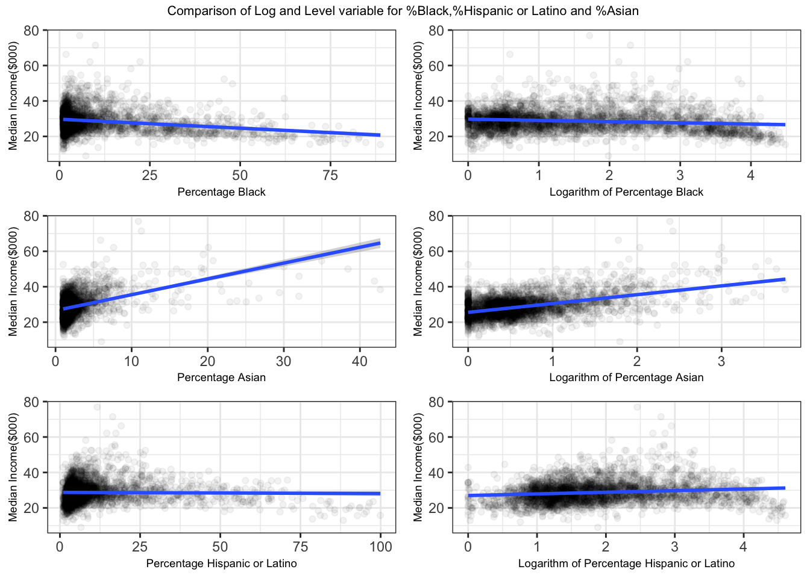

4 Results
| Statistic | N | Min | Mean | Median | Max |
| median_income_in_thousands | 3,142 | 9.023 | 28.703 | 27.962 | 76.901 |
| pct_married | 3,143 | 21.546 | 52.154 | 52.651 | 83.068 |
| pct_separated | 3,143 | 0.000 | 1.842 | 1.674 | 41.758 |
| pct_widowed | 3,143 | 0.222 | 7.165 | 7.067 | 25.185 |
| pct_divorced | 3,143 | 1.099 | 11.905 | 11.924 | 29.780 |
| pct_HS | 3,143 | 6.524 | 33.927 | 34.306 | 54.963 |
| pct_somecollege | 3,143 | 5.926 | 31.059 | 31.027 | 81.818 |
| pct_bachelor_or_higher | 3,143 | 0.000 | 22.618 | 20.226 | 79.140 |
| pct_white | 3,143 | 0.967 | 75.752 | 83.115 | 100.000 |
| pct_black | 3,143 | 1.000 | 9.877 | 3.175 | 88.790 |
| pct_AmerIndian_or_alaska | 3,143 | 0.000 | 1.809 | 0.243 | 92.926 |
| pct_asian | 3,143 | 1.000 | 2.393 | 1.630 | 42.678 |
| pct_hispanic_or_latino | 3,143 | 1.000 | 10.587 | 5.378 | 99.902 |
As you can see that the table summarizes all the statistics that have been used to build and run the regression models. The summary includes the number of observations, minimum, average, median and the maximum of our response variable median_income_in_thousands and also for all the other explanatory variables of race, education and marital status category.
Moreover, you can see that the maximum for the percentage of Hispanic or Latino is over 100 percentage point. This is because, we need to do log transformation for this variable and there are certain counties in the data which has a Percentage point of 0 for the variable. We can’t simply get rid of those as those data might hold interesting result in our regression models. As a result we had to add 1 percentage point to each of the counties for the variable. If we don’t add one percentage point for all the counties it will mess up the proportion of the data. As a result the county in our data which had nearly 100 percentage point of Percentage Hispanic or Latino now has over 100 percentage point. We had to use log transformation for Percentage Asian and percentage Black too and we encountered similar prob in those variable as a result we treated those variable the same way.

Sometimes we need to transform some of the variables to get better results from our regressions. That’s why we checked to see if any of the variables used in our regression model need any transformation. Usually using the logarithm of the variables which doesn’t fit the model well can improve the fit of the model by transforming the distribution to a more normally-shaped bell curve. As you can see in the graph that we have found that only Percentage of Asian , Percentage of Black and Percentage of Hispanic or Latino required the log transformation. You can see in the scatter plot that before the transformation that the points are more skewed and not fitting the line of best fit properly. But after the log transformation in both of the variables you can see that we obtain a regression line more adjusted and fitted throughout the data points.For the Percentage of Asian, though the regression line is not fitted properly still it’s better than the fit without log transformation. As a result to get slightly better results we used log transformation for the Percentage of Asian variable. Thus we can expect that this transformation will result in a better prediction model.
| Dependent variable: | |||||
| median_income_in_thousands | |||||
| OLS | panel | ||||
| linear | |||||
| (Pooled OLS) | (state-FE Only race) | (state-FE race and marital) | (state-FE race and edu) | (state-FE All variables) | |
| pct_married | 0.361*** | 0.415*** | 0.441*** | ||
| p = 0.000 | p = 0.000 | p = 0.000 | |||
| pct_widowed | -0.290*** | -0.683*** | -0.282*** | ||
| p = 0.000 | p = 0.000 | p = 0.000 | |||
| pct_divorced | 0.023 | 0.095*** | 0.252*** | ||
| p = 0.461 | p = 0.007 | p = 0.000 | |||
| pct_separated | 0.219*** | -0.053 | 0.495*** | ||
| p = 0.002 | p = 0.444 | p = 0.000 | |||
| pct_white | -0.013* | 0.117*** | 0.026*** | 0.026*** | -0.038*** |
| p = 0.090 | p = 0.000 | p = 0.002 | p = 0.002 | p = 0.00000 | |
| log(pct_black) | 0.480*** | 0.408*** | 1.190*** | -0.174 | 0.809*** |
| p = 0.00000 | p = 0.003 | p = 0.000 | p = 0.146 | p = 0.000 | |
| log(pct_asian) | 1.786*** | 4.629*** | 3.722*** | 0.700*** | 0.797*** |
| p = 0.000 | p = 0.000 | p = 0.000 | p = 0.0004 | p = 0.00001 | |
| log(pct_hispanic_or_latino) | 0.642*** | 1.399*** | 0.560*** | 1.514*** | 0.965*** |
| p = 0.00000 | p = 0.000 | p = 0.0002 | p = 0.000 | p = 0.000 | |
| pct_AmerIndian_or_alaska | 0.011 | -0.016 | 0.015 | -0.057*** | 0.003 |
| p = 0.362 | p = 0.280 | p = 0.238 | p = 0.00002 | p = 0.761 | |
| pct_HS | 0.282*** | 0.258*** | 0.207*** | ||
| p = 0.000 | p = 0.000 | p = 0.000 | |||
| pct_somecollege | 0.202*** | 0.265*** | 0.151*** | ||
| p = 0.000 | p = 0.000 | p = 0.000 | |||
| pct_bachelor_or_higher | 0.491*** | 0.508*** | 0.457*** | ||
| p = 0.000 | p = 0.000 | p = 0.000 | |||
| Constant | -17.767*** | ||||
| p = 0.000 | |||||
| Observations | 3,142 | 3,142 | 3,142 | 3,142 | 3,142 |
| R2 | 0.637 | 0.261 | 0.472 | 0.466 | 0.619 |
| Adjusted R2 | 0.636 | 0.248 | 0.462 | 0.456 | 0.611 |
| Note: | *p<0.1;**p<0.05;***p<0.01 | ||||
Our choice of fixed effect is the one which controls for the State. A lot of things are controlled by state laws which are the same across all counties within a state. By controlling for state we will be able to account for factors that are distinct to that state and the counties within the state which includes the geographic factors, the state legislation and the infrastructure of the state.
As you can see that the summary table contains the result of the regressions of the 5 models. We tried to find the interesting results of each of the categories (Race, Marital Status and Education) in the regression model. We can see that in the Model 2 we have just used the variables of our Race category and then we added the education variables in Model 3 and the marital status variables in the Model 4. We also have Model 5 which includes all the variables of our three categories. We also have a pooled OLS model which is the Model 1, including all our explanatory variables. In our data we have our response variable which is the Median Income in thousands of Dollar. But for the regression we will interpret the median income in USD.
First we notice that holding all the other variables constant, an increase of one percentage point in the rate of married people(pct_married), yields an average increase of 459 USD in median income. This is statistically significant at a level of 1%. We can also see that there is not much difference in the number of increase in the other model when we don’t account for the variations caused by the Educational variables. This also supports one of the articles which found that income is generally higher for married individuals.2 We can also notice that, holding all the other variables constant, an increase in one percentage point in the rate of Widowed (pct_widowed) , yields an average decrease of 302 USD in median income. But when we don’t account for the Education variables in our regression model the amount of decrease is more than when we account for the education variables in our model. And both the coefficient is statistically significant at a level of 1%. Also we can see that there is differences in coefficient for across models for the pct_separated. You can see that by holding all the other variables constant, one percentage point increase in separated people, yields an average decrease of 881 USD in median income. This is statistically significant at a level of 1%. But when we see in the model 5 the decrease is significantly lower it is because we account for the education variables for this model.
By looking at the table, we can notice that in Model 5, an one percentage point increase in the percentage of White population, yields in an decrease of 55 USD in median income. This is statistically significant at a 1% level. But it is interesting that in our Model 4 we can see that the median income in thousand dollars increases by an one percentage point increase in pct_white when we hold other variable constant. This is interesting because the Model 4 doesn’t take the Marital Status variables into account. Previously we have see in our graphs that the Median Income in thousand increases as the Percentage of White population increases. We can also see that in the Model 2 when we only account for variables of Race in our model the Median Income Increases with increase in white population percentage which is statistically significant. And that certainly goes with what we found out in our graphs.
We observe a similar type of interesting results across our all five models for the percentage of Black Population. In model 5 by holding all other variables constant, an 1% increase in percentage point of black population, yields an average increase of 8.25 USD in median income. This is statistically significant at a 1% level. But when we do not account for Marital Status variables in the Model 4 the average change in median income in thousands decreases which is statistically significant at a 10% level. In all the other models the median income in thousand increases with the increase in black population holding other variables constant. So we can certainly see this it doesn’t go with what we expected from our initial graph findings. We think that there are lot of other factors out there for which the median income decreases as the percentage of black increases and we couldn’t include all of those variables in our regression model. As a result we can’t conclude that the median income in thousand decreases as the percentage of black increases. But this result is certainly interesting to do more research in future and find out more about the effects of increase in Percentage Black in Median Income.
We can notice in the Model 5 that holding all other variables constant, a 1% increase in percentage point of Asian population, yields an average increase of 6.57 USD in median income. This is statistically significant at a 1% level. We can also see that when we don’t include the Education variables in our model 1 and 2, the increase in median income in thousands is more and is equally statistically significant. We can also notice that it supports our initial thoughts on how percentage of Asian increases the Median Income in thousands. It also supports the model minority idea where Asians have a lot more income than other races.3
As we can see that holding all other variables constant,an 1% increase in percentage point of Hispanic or Latino population, yields an average increase of 0.00760 point in median income in thousand dollars. This is statistically significant at a 1% level. We can see a similar kind of results from our other models and when we don’t account for Education or Marital Status Variables the increase is much more in the Model 2.
When it comes to the effects of Education variables on the median income in thousands, we can see in our Model 5 that holding all other variables constant, an increase in one percentage point of percentage of people who have a high school degree (pct_HS), yields an average increase of 199 USD in median income. This is statistically significant at 1% level. We can see similar kind of results for this variable in our other models too. For the population percentage with some college or an associate degree (perc_somecollege), an increase of one percentage point in the rate of people who have an associate degree or some college results in an average increase of 126 USD in median income, which is significant at a statistical rate of 1%. Which is also lower than the increase that we have seen for pct_HS. We can also notice that holding all other variables constant an increase in one percentage point of percentage of people who have a bachelor degree or higher, results in an average increase of 430 USD in median income. This is also statistically significant at 1% level. We can also clearly see that it has the highest amount of increase in median income among all the Education variables included in the mode which suggests that increase in higher education attainments can increase in more median income in thousands. 4
Effects of Marriage on Financial Stability http://marripedia.org/effects_of_marriage_on_financial_stability↩︎
Asian Americans as the „Model Minority”: Outdoing Whites? Or Media Hype? Bob H. Suzuki Pages 13-19 | Published online: 09 Jul 2010 https://www.tandfonline.com/doi/abs/10.1080/00091383.1989.9937601?journalCode=vchn20↩︎
Education, Income, and Wealth by Scott A. Wolla and Jessica Sullivan https://research.stlouisfed.org/publications/page1-econ/2017/01/03/education-income-and-wealth/↩︎